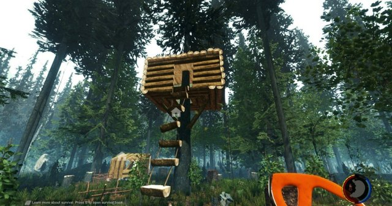

Jogos de sobrevivência e cooperativos
Os jogos de sobrevivência são considerados uma extensão dos gêneros de ação e aventura, onde o personagem geralmente está encalhado ou esperados dos outros e deve trabalhar sozinho para sobreviver e completar um objetivo ao mesmo tempo em que estimulam a exploração de um mundo aberto.
No início de um típico jogo de sobrevivência, o jogador geralmente é colocado sozinho no mundo do jogo com poucos recursos. Em alguns títulos, o mundo é gerado aleatoriamente para que os jogadores busquem ativamente alimentos e armas. O personagem do jogador normalmente terá uma barra de saúde e sofrera danos por queda, fome, afogamento, contato com fogo, líquidos mortais ou sendo atacado por monstros que abitam o mundo e até mesmo outros jogadores.
Os jogos de sobrevivência contam com muitas mecanicas de farms, crafts, construções, missões e desafios. Que são nesessarias para sobreviver e evoluir no jogo.
Com o modo cooperativo outros jogadores podem ingresar no ambiente do jogo e ajudar nos desafios das missões, onde muitos jogos e fases possam contar com a ajuda de outro jogador para conseguir concluir os desafios além de ser mais divertido jogar com amigos.
Esse tipo de jogo visa estabelecer relações de confiança e parceria em um clima descontraído, proporcionando o fortalecimento do grupo e a empatia entre as pessoas.
Em sua prática, os jogos cooperativos não possuem eliminações, exclusões, vencedores e perdedores. Em geral, o modo como a tarefa se desenvolve e a interação entre os participantes tornam-se o ponto central.
O desafio consiste na superação de medos, inseguranças e da dificuldade de agir e pensar coletivamente.
Os jogos cooperativos cumprem um importante papel de didático e servem como uma metáfora da vida, onde muitas vezes é necessário unir forças para alcançar uma determinada meta.
 Redalyc Toda Materia